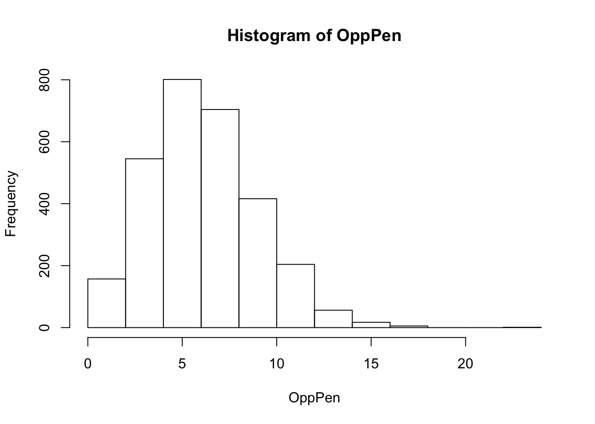

The data source is game-by-game referee and penalty information from www.pro-football-reference.com/officials/ that was collected from each NFL game from 1999-present. Pro-football reference gets their data from Gracenote (a Nielsen Company) and the creators of ESPN Pro Football Encyclopedia. For simplicity purposes, I will be limiting the data set to current head referees who have at least 50 head reffing games between 1999 and the present. Limiting the data to head referees eliminates the redundancy of having duplicate data from the whole referee crew and requiring at least 50 games of head reffing ensures there are enough data points for each referee. All of the referees had to have been a head referee in the last season (2017-2018).
| Name | Code |
|---|---|
| Brad Allen | 1 |
| Walt Anderson | 2 |
| Clete Blakeman | 3 |
| Jerome Boger | 4 |
| Carl Cheffers | 5 |
| Walt Coleman | 6 |
| Tony Corrente | 7 |
| Ed Hochuli | 8 |
| Terry McAulay | 9 |
| Pete Morelli | 10 |
| John Parry | 11 |
| Gene Steratore | 12 |
| Ron Torbert | 13 |
| Jeff Triplette | 14 |
| Bill Vinovich | 15 |
| Craig Wrolstad | 16 |
| Name | Code |
|---|---|
| Arizona Cardinals | 1 |
| Atlanta Falcons | 2 |
| Baltimore Ravens | 3 |
| Buffalo Bills | 4 |
| Carolina Panthers | 5 |
| Chicago Bears | 6 |
| Cincinnati Bengals | 7 |
| Cleveland Browns | 8 |
| Dallas Cowboys | 9 |
| Denver Broncos | 10 |
| Detroit Lions | 11 |
| Green Bay Packers | 12 |
| Houston Texans | 13 |
| Indianapolis Colts | 14 |
| Jacksonville Jaguars | 15 |
| Kansas City Chiefs | 16 |
| Los Angeles Rams | 17 |
| Los Angeles Chargers | 18 |
| Miami Dolphins | 19 |
| Minnesota Vikings | 20 |
| New England Patriots | 21 |
| New Orleans Saints | 22 |
| New York Giants | 23 |
| New York Jets | 24 |
| Oakland Raiders | 25 |
| Philadelphia Eagles | 26 |
| Pittsburgh Steelers | 27 |
| San Francisco 49ers | 28 |
| Seattle Seahawks | 29 |
| Tampa Bay Buccaneers | 30 |
| Tennessee Titans | 31 |
| Washington Redskins | 32 |
headref <- read.csv("reffing data.csv")
attach(headref) ##basic statistic and descriptions of data
mean(Home)## [1] 16.7629 sd(Home)## [1] 9.226499 hist(Home)mean(Opp)## [1] 16.44942 sd(Opp)## [1] 9.209496 hist(Opp)mean(OppPen)## [1] 6.607708 sd(OppPen)## [1] 2.866795 hist(OppPen)
mean(OppPenYds)## [1] 55.28837 sd(OppPenYds)## [1] 27.90445 hist(OppPenYds)mean(HomePen)## [1] 6.164143 sd(HomePen)## [1] 2.691397 hist(HomePen)mean(HomePenYds)## [1] 51.50379 sd(HomePenYds)## [1] 26.06358 hist(HomePenYds)mean(PenDiff)## [1] 0.443565 sd(PenDiff)## [1] 3.615574 hist(PenDiff)summary(factor(Ref))## 1 2 3 4 5 6 7 8 9 10 11 12 13 14 15 16
## 52 226 115 171 146 282 284 293 258 224 158 176 54 283 131 53refcount <- summary(factor(Ref))
hist(Ref)